الثورة البلشفية ونشأة الاتحاد السوفياتي
مقدمة
اندلعت الثورة البلشفية في روسيا القيصرية الإقطاعية سنة 1917 في نهاية الحرب العالمية الأولى، فأطاحت بنظام القياصرة وعوّضت لأول مرة في التاريخ بنظام اشتراكي معادٍ للنظام الرأسمالي. فما هي أسباب هذه الثورة؟
I أسباب الثورة
1 أزمة المجتمع الروسي قبيل الثورة
احتدّت قبيل الحرب العالمية الأولى التناقضات العديدة والمتنوعة التي كانت تعيشها الإمبراطورية الروسية على عديد الأصعدة الاجتماعية والاقتصادية والسياسية.
أ اضطهاد القوميات غير الروسية
قدّرت مساحة روسيا قبيل الثورة بـ 22 مليون كم² وتضم قرابة 170 مليون نسمة، وتتكوّن من "فسيفساء قومية" (أتراك، يهود، شيشان...) تخضع كلها لهيمنة الثقافة الروسية، ومع تنامي الوعي القومي تزايد القمع الروسي لهذه القوميات.
ب التخلف الاقتصادي والتأزم الاجتماعي
- كانت روسيا إلى حدود 1917 بلدًا فلاحيًا تتجاوز فيه نسبة الريفيين ¾ المجتمع، ورغم إلغاء نظام القنانة لم يستفد عامة الريفيين من الإصلاحات، فارتفع عدد المزارعين الفقراء.
- أما في المدن حيث تطورت الصناعة بفضل رؤوس الأموال الأجنبية، فقد تدنت أوضاع العمال بسبب ارتفاع الأسعار وبقاء الأجور منخفضة، إضافة إلى طول ساعات العمل.
طبقات مضطهدة نما فيها الوعي العمالي + وجود أرضية مناسبة لقيام الثورة.
ج التناقضات السياسية: تحجر النظام القيصري وتنامي قوى المعارضة
اعتمد القيصر نيقولا الثاني نظامًا "أوتوقراطيًا" (نظام حكم فردي استبدادي مطلق) لقي معارضة شديدة تمثلت في:
- المعارضة الليبرالية: أنصار الحزب الدستوري الديمقراطي يضم الطبقات البورجوازية، طالب بإقامة نظام دستوري برلماني.
- المعارضة الاشتراكية: قاعدتها المثقفون والفلاحون والعمال، وانقسمت إلى جزئين: الاشتراكيون الثوريون يطالبون خصوصًا بالإصلاح الزراعي الثوري (تقسيم الأراضي)، والاشتراكيون الديمقراطيون (1898) وينقسم إلى:
- المناشفة: أقلية تطالب بتأجيل الثورة لاستحالتها في تلك الظروف.
- البلاشفة: أغلبية قادها لينين آمنت بإمكانية الثورة وإرساء ديكتاتورية البروليتاريا بثورة العمال والمزارعين.
وقد شهدت روسيا سنة 1905 ثورةً شعبيةً عارمةً (الأحد الدامي) قُمعت بوحشية، لكنها أظهرت عمق الأزمة وأسفرت عن إنشاء الدوما (برلمان ذو صلاحيات محدودة) دون أن تحل جذرياً التناقضات، فبقيت الأرضية مهيأة لثورة جديدة.
2 الحرب واحتداد التناقضات
- ساهمت الحرب في تدهور الأوضاع الداخلية، حيث انهار الإنتاج الفلاحي وارتفعت الأسعار بصفة مشطة واضطرب توزيع المواد الغذائية على المدن والجبهات، مما أدى إلى انتشار الفقر وهدد بالمجاعة.
- تزامن الوضع مع هزائم الروس في مختلف الجبهات، مما أدى إلى تمرد الجنود وتزايد عدد الفارين من الجبهات.
وفي فيفري 1917 اندلعت ثورة عفوية أطاحت بالقيصرية وأقامت حكومة مؤقتة برجوازية واصلت الحرب، مما فاقم الغضب الشعبي وفتح الباب أمام البلاشفة للتحرك. وقد تبنى لينين أطروحات أبريل التي دعت إلى "كل السلطة للسوفياتات" والانسحاب من الحرب، فازداد التأييد الشعبي للبلاشفة.
عجز ميزانية الدولة على تمويل الحرب وتعمّق التناقضات، وقد تنامت فيه المعارضة وخاصة في صفوف البلاشفة الذين أعلنوا الثورة. ("الحرب أحسن هدية قدّمت للثورة" – لينين)
خاتمة
تجمعت هذه الأسباب الاقتصادية والاجتماعية والسياسية، وفاقمتها ويلات الحرب العالمية الأولى، لتخلق وضعًا ثوريًا في روسيا، مهد الطريق أمام البلاشفة لقيادة الثورة وإسقاط النظام القيصري.
📖 تعريفات
👤 شخصيات
- نيقولا الثاني: آخر قياصرة روسيا (1894-1917)، وُلد في 18 ماي 1868 بضاحية تسارسكوي سيلو قرب بترسبورغ، وتوفي مُعدَماً في 17 جويلية 1918 بيكاتيرينبورغ. تميز حكمه بالاستبداد والتخلف، وأُجبر على التنازل عن العرش في 15 مارس 1917 (2 مارس حسب التقويم القديم) على إثر ثورة فيفري.
- فلاديمير لينين: زعيم البلاشفة ومؤسس الاتحاد السوفياتي، وُلد في 22 أفريل 1870 بسمبيرسك (أوليانوفسك حالياً) وتوفي في 21 جانفي 1924 بغوركي قرب موسكو. قاد ثورة أكتوبر 1917 وأعلن تأسيس الاتحاد السوفياتي في 30 ديسمبر 1922، وطبّق المبادئ الماركسية اللينينية.
- ليون تروتسكي: أحد أبرز قادة الثورة البلشفية، وُلد في 7 نوفمبر 1879 بيانوفكا (أوكرانيا) وتوفي مقتولاً في 21 أوت 1940 بمكسيكو سيتي. تولى تنظيم الجيش الأحمر (1918) وقيادة مفاوضات صلح بريست ليتوفسك مع ألمانيا (3 مارس 1918)، ثم أُقصي من الحزب سنة 1927 ونُفي سنة 1929 وخسر صراعه مع ستالين.
⚔️ أحداث هامة
- الأحد الدامي (1905): مظاهرة سلمية قادها الكاهن غابون في 22 جانفي 1905 (9 جانفي حسب التقويم القديم) أمام قصر الشتاء ببترسبورغ، طالبت بإصلاحات اجتماعية وسياسية، فردت عليها قوات القيصر بإطلاق النار مما أدى إلى مقتل وجرح المئات، وأشعل ثورة 1905.
- ثورة فيفري (1917): انتفاضة شعبية عارمة اندلعت في بتروغراد في 8 مارس 1917 (23 فيفري حسب التقويم القديم) واستمرت إلى 16 مارس، أطاحت بالنظام القيصري بتنازل نيقولا الثاني عن العرش في 15 مارس 1917 وأسست حكومة مؤقتة بقيادة لفوف ثم كيرينسكي، لكنها فشلت في معالجة قضايا الحرب والأرض.
- ثورة أكتوبر (1917): الانقلاب المسلح الذي قاده البلاشفة بقيادة لينين في 7 نوفمبر 1917 (25 أكتوبر حسب التقويم القديم) ضد الحكومة المؤقتة في بتروغراد، وأدى إلى إقامة أول دولة اشتراكية في العالم، ثم إلى تأسيس الاتحاد السوفياتي في 30 ديسمبر 1922.
📅 سنوات وفترات
- 1861: إلغاء نظام القنانة في روسيا بمرسوم من القيصر ألكسندر الثاني صدر في 3 مارس 1861 (19 فيفري حسب التقويم القديم).
- 1898: تأسيس حزب العمال الاشتراكي الديمقراطي الروسي في مؤتمره الأول بمدينة مينسك (1-3 مارس 1898)، وانقسم لاحقاً في مؤتمر لندن سنة 1903 إلى بلاشفة ومناشفة.
- 1905: اندلاع أول ثورة روسية (الأحد الدامي) وإنشاء الدوما.
- 1914: اندلاع الحرب العالمية الأولى ودخول روسيا طرفاً فيها.
- 1917: ثورتا فيفري وأكتوبر وسقوط النظام القيصري وتولي البلاشفة السلطة.
📌 مصطلحات أخرى
- القنانة: نظام إقطاعي يربط الفلاح بالأرض ويمنح النبيل سلطة شبه مطلقة عليه، ألغي في روسيا سنة 1861.
- الأوتوقراطية: نظام حكم فردي استبدادي مطلق يعتمد على السلطة المطلقة للحاكم دون رقابة.
- السوفياتات: مجالس العمال والجنود والفلاحين التي ظهرت أثناء الثورة الروسية سنة 1905 (أول سوفيات بترسبورغ في أكتوبر 1905) وأصبحت بعد ثورة أكتوبر 1917 نواة السلطة الجديدة.
- البلاشفة: الأغلبية الثورية من حزب العمال الاشتراكي الديمقراطي الروسي، تشكلت في المؤتمر الثاني للحزب بلندن سنة 1903، قادها لينين وآمنت بإمكانية الثورة وإرساء ديكتاتورية البروليتاريا.
- المناشفة: الأقلية المعتدلة من الحزب الاشتراكي الديمقراطي التي انقسم عنها في مؤتمر لندن سنة 1903، عارضت الثورة الفورية وفضلت التغيير التدريجي عبر العمل السياسي والقانوني.
- الدوما: برلمان روسي أُنشئ بعد ثورة 1905، اجتمع أول مرة في 27 أفريل 1906 بصلاحيات محدودة، وكان خاضعاً لسلطة القيصر وحُلّ مرات عدة.
- البروليتاريا: الطبقة العاملة التي لا تملك وسائل الإنتاج وتعتمد على بيع قوة عملها، وهي القوة الثورية حسب النظرية الماركسية.
- الحزب الدستوري الديمقراطي (الكاديت): حزب ليبرالي روسي تأسس في أكتوبر 1905 ويمثل البورجوازية، طالب بإقامة ملكية دستورية وبرلمان منتخب.
- الاشتراكيون الثوريون: حزب اشتراكي روسي تأسس سنة 1901، ركز على قضايا الفلاحين وطالب بتأميم الأراضي وتوزيعها، وكان له قاعدة واسعة في الريف.
🗺️ خرائط ومعطيات مصورة
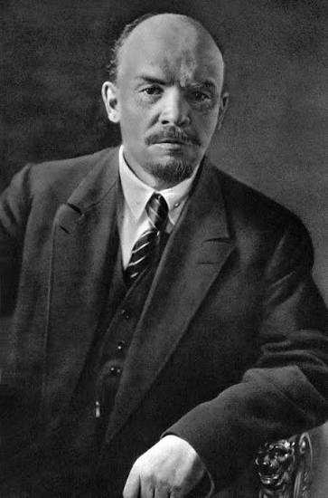
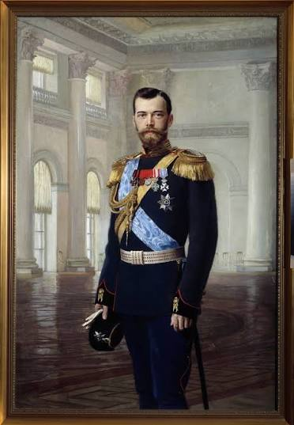
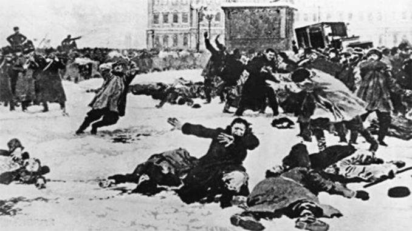
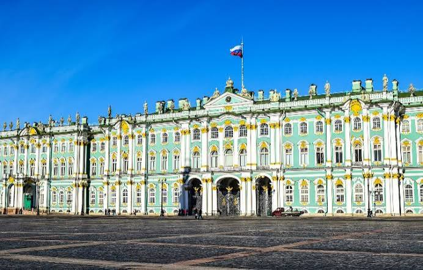
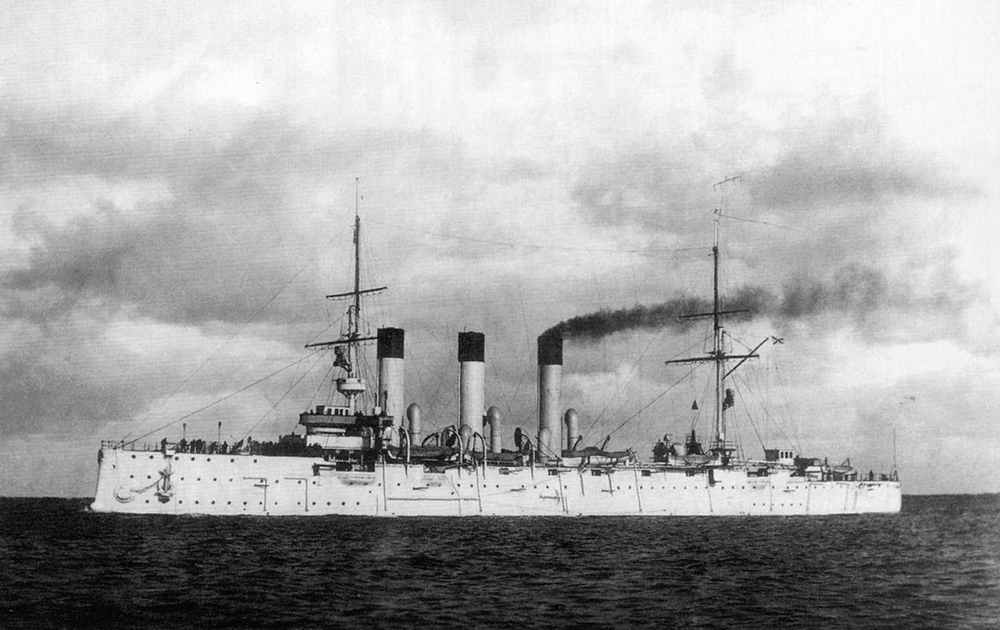
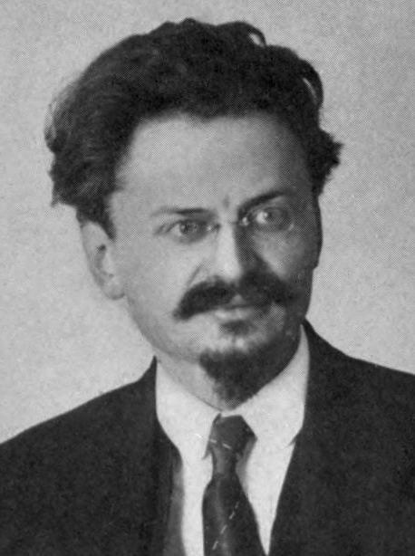
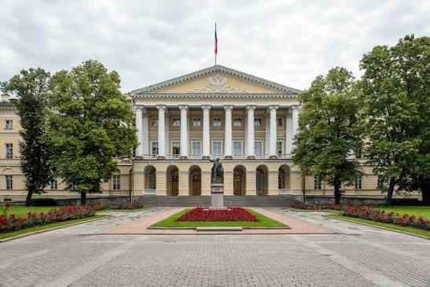
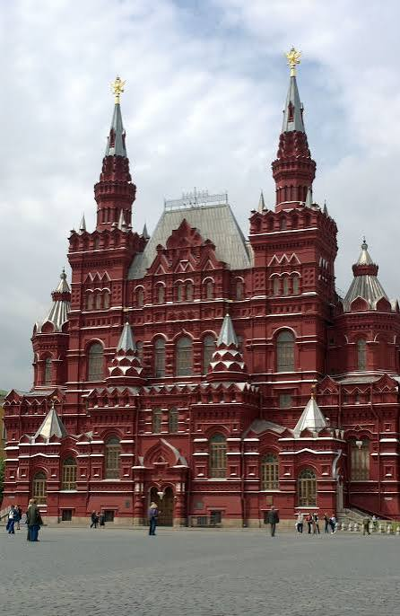
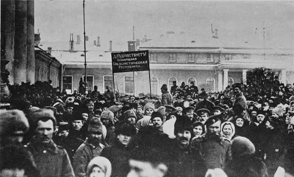
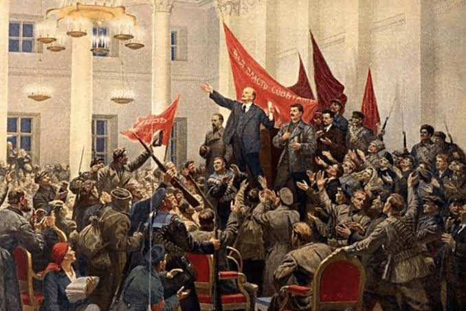
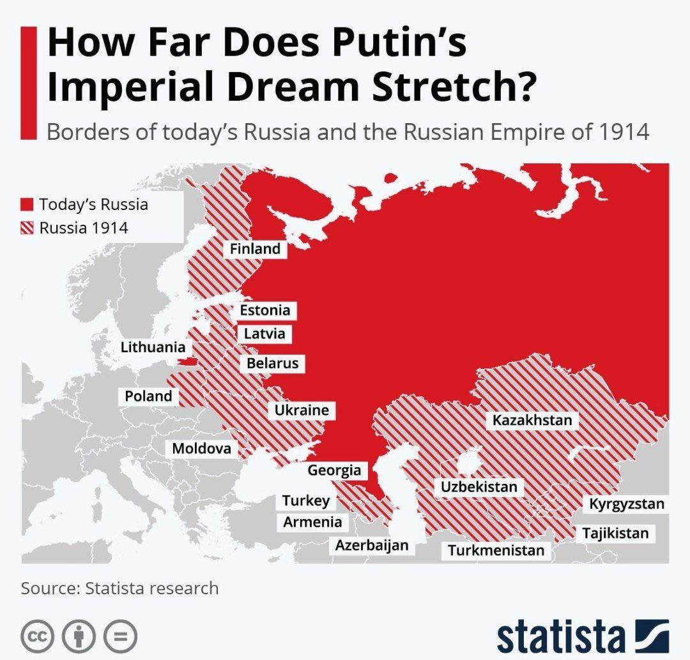
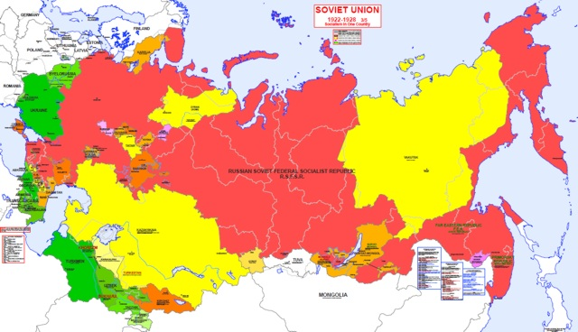